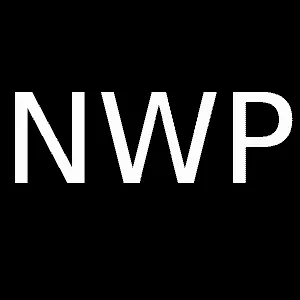

<!DOCTYPE html><html lang="ja"><meta charset="utf-8"><title>NWPNET</title><meta name="description" content="NWPNET-NWPのWEBサイト"><link rel="icon" type="image/webp" href="images/fp.webp"><meta name="viewport" content="width=device-width, initial-scale=1"><style>/*! destyle.css v3.0.2 | MIT License | https://github.com/nicolas-cusan/destyle.css */
*,:after,:before{box-sizing:border-box;border-style:solid;border-width:0}html{line-height:1.15;-webkit-text-size-adjust:100%;-webkit-tap-highlight-color:rgba(0,0,0,0)}body{margin:0}main{display:block}h1,h2,h3,h4,h5,h6{font-size:inherit;font-weight:inherit;margin:0}address,blockquote,dl,figure,form,iframe,ol,p,pre,table,ul{margin:0}ol,ul{padding:0;list-style:none}dt{font-weight:700}dd{margin-left:0}hr{box-sizing:content-box;height:0;overflow:visible;border-top-width:1px;margin:0;clear:both;color:inherit}pre{font-family:monospace;font-size:inherit}address{font-style:inherit}a{background-color:transparent;text-decoration:none;color:inherit}abbr[title]{text-decoration:underline dotted}b,strong{font-weight:bolder}code,kbd,samp{font-family:monospace;font-size:inherit}small{font-size:80%}sub,sup{font-size:75%;line-height:0;position:relative;vertical-align:baseline}sub{bottom:-.25em}sup{top:-.5em}embed,iframe,img,object,svg{vertical-align:bottom}button,input,optgroup,select,textarea{-webkit-appearance:none;appearance:none;vertical-align:middle;color:inherit;font:inherit;background:transparent;padding:0;margin:0;border-radius:0;text-align:inherit;text-transform:inherit}[type=checkbox]{-webkit-appearance:checkbox;appearance:checkbox}[type=radio]{-webkit-appearance:radio;appearance:radio}[type=button],[type=reset],[type=submit],button{cursor:pointer}[type="button"]:disabled,[type="reset"]:disabled,[type="submit"]:disabled,button:disabled{cursor:default}:-moz-focusring{outline:auto}select:disabled{opacity:inherit}fieldset,option{padding:0}fieldset{margin:0;min-width:0}legend{padding:0}progress{vertical-align:baseline}textarea{overflow:auto}[type="number"]::-webkit-inner-spin-button,[type="number"]::-webkit-outer-spin-button{height:auto}[type=search]{outline-offset:-2px}[type="search"]::-webkit-search-decoration{-webkit-appearance:none}::-webkit-file-upload-button{-webkit-appearance:button;font:inherit}label[for]{cursor:pointer}details{display:block}summary{display:list-item}[contenteditable]:focus{outline:auto}table{border-color:inherit;border-collapse:collapse}caption{text-align:left}td,th{vertical-align:top;padding:0}th{text-align:left;font-weight:700}</style><style>@charset 'UTF-8';:root{--light-blue:#4db1ec;--blue:#1665cc;--purple:#b473bf;--pink:#ffb2c1;--orange:#ff9f67;--yellow:#ffd673;--light-green:#a2e29b;--green:#00a2af;--grey:#333;--white:#fff}html{font-size:100%;scroll-behavior:smooth}body{color:var(--grey);font-family:sans-serif}p{line-height:1.7}img{max-width:100%}h2{font-size:3rem;margin-bottom:2rem}h1,h2{text-align:center}.hero-date,h1,h2,header{font-family:impact,sans-serif}.wrapper{max-width:50pc;width:100%;margin:0 auto;padding:0 1rem}header{background:var(--grey);padding:1rem 0;position:fixed;width:100%;z-index:1}header .wrapper{display:flex;justify-content:space-between}header a{color:var(--white);font-size:1.5rem}.btn-menu{position:absolute;top:9pt;right:9pt;border:1px solid hsla(0,0%,100%,.5);color:var(--white);padding:.5rem 1rem}.main-nav{background:var(--grey);width:0;position:absolute;z-index:2;top:50px;right:0;overflow:hidden;transition:.5s}.main-nav li{text-align:center;margin:2rem 0}.main-nav a{display:block}.main-nav.open-menu{width:100%}#hero{background-color:var(--light-blue);background-repeat:no-repeat;background-position:center;background-size:cover;background-blend-mode:screen;animation:a 24s infinite;height:100vh;display:flex;align-items:center;-webkit-clip-path:polygon(0 0,100% 0,100% 90%,0 100%);clip-path:polygon(0 0,100% 0,100% 90%,0 100%)}@keyframes a{0{background-color:var(--light-blue)}12.5%{background-color:var(--blue)}25%{background-color:var(--purple)}37.5%{background-color:var(--pink)}50%{background-color:var(--orange)}62.5%{background-color:var(--yellow)}75%{background-color:var(--light-green)}87.5%{background-color:var(--green)}to{background-color:var(--light-blue)}}#hero h1{font-size:3.5rem}#hero h1,.hero-date{margin-bottom:1.5rem}.hero-date{text-align:center;border-top:3px solid var(--grey);border-bottom:3px solid var(--grey);padding:.5rem 0;font-size:1.5rem}#about{padding:4rem 1rem}#about h2{background:linear-gradient(var(--yellow),var(--orange));-webkit-background-clip:text;background-clip:text;-webkit-text-fill-color:transparent;text-fill-color:transparent}#about p{margin-bottom:2rem}#news{background-image:linear-gradient(var(--light-green),var(--green));padding:7rem 0;-webkit-clip-path:polygon(0 0,100% 10%,100% 90%,0 100%);clip-path:polygon(0 0,100% 10%,100% 90%,0 100%)}#news h2,.news-table{color:var(--white)}.news-table{width:100%}.news-table tr{border-bottom:1px solid hsla(0,0%,100%,.5)}.news-table td{display:block;line-height:1.5}.news-date{font-size:.875rem;padding-top:1rem}.news-content{padding-bottom:1rem}#speakers{padding:4rem 1rem}.speakers-list{display:flex;flex-direction:row-reverse;align-items:flex-start;margin-bottom:2rem}.speakers-text{margin-left:1rem}#speakers h2{background:linear-gradient(var(--light-blue),var(--blue));-webkit-background-clip:text;background-clip:text;-webkit-text-fill-color:transparent;text-fill-color:transparent}#speakers h3{font-size:1.5rem;margin-bottom:.5rem}#speakers img{border-radius:50%;width:20%}#ticket{background-image:linear-gradient(var(--pink),var(--purple));padding:6rem 1rem 2rem;-webkit-clip-path:polygon(0 0,100% 10%,100% 100%,0 100%);clip-path:polygon(0 0,100% 10%,100% 100%,0 100%)}#ticket h2{color:var(--white)}.ticket-form{max-width:5in;margin:0 auto 5rem}.ticket-form label{color:var(--white);display:block;margin-bottom:.5rem}.ticket-field{background:hsla(0,0%,100%,.6);padding:1rem;width:100%;margin-bottom:1.5rem}.ticket-btn{background:var(--grey);color:var(--white);display:block;width:100%;padding:1rem;margin-top:1rem}.footer{border-top:1px solid hsla(0,0%,100%,.5);padding-top:2rem;text-align:center;font-size:.875rem;color:var(--white)}.footer a{text-decoration:underline}@media(min-width:600px){h2{font-size:5rem}.ticket-btn:hover,a:hover{transition:.3s}a:hover{color:var(--blue)}.ticket-btn:hover{background:var(--blue)}.btn-menu{display:none}.main-nav{width:100%;position:static;display:flex}.main-nav li{margin:0 0 0 1.5rem}#hero h1{font-size:6.875rem}.hero-date{font-size:3rem}.news-table td{display:table-cell}.news-date{padding:1.125rem 0 1rem 1rem}.news-content{padding:1rem 1rem 1rem 0}#speakers h2{margin-bottom:4rem}.speakers-list{margin-bottom:3rem}.speakers-text{margin-left:2rem}}</style><header><div class="wrapper"><a class="logo" href="#hero">NWPNET</a><nav> <button class="btn-menu">メニュー</button><ul class="main-nav"><li><a href="#about">リンク</a><li><a href="#news">更新履歴</a><li><a href="#speakers">プロフィール</a></ul></nav></div></header><section id="hero"><div class="wrapper"><h1>NWPNET</h1><p>普通の小学生が管理しているWEBサイト 日本一早くて鮮やかなサイトを目指してる</div></section><section id="about" class="wrapper"><h2>リンク</h2><ul><li><a href="download.html">ダウンロードページ</a></ul></section><section id="news"><h2>更新履歴</h2><div class="wrapper"><table class="news-table"><tr><td class="news-date">2022年9月25日<td class="news-content"><a href="download.html">ダウンロードページ</a>公開！！<tr><td class="news-date">2022年9月25日<td class="news-content"><a href="index.html">NWPNET</a>公開！！</table></div></section><section id="speakers" class="wrapper"><h2>プロフィール</h2><div class="speakers-list"><div class="speakers-text"><h3>NWP</h3><p>普通の小学６年生 HTMLやCSSを書いている</div></div></section><section id="ticket"><div class="footer wrapper"><p><a href="https://forms.gle/4c3kvsGBevMhZasX8">お問い合わせ</a> / <small>© 2022-PFN</small></div></section><script>const btn=document.querySelector(".btn-menu"),nav=document.querySelector(".main-nav");btn.addEventListener("click",()=>{nav.classList.toggle("open-menu"),btn.innerHTML=btn.innerHTML==="メニュー"?"閉じる":"メニュー"})</script>
